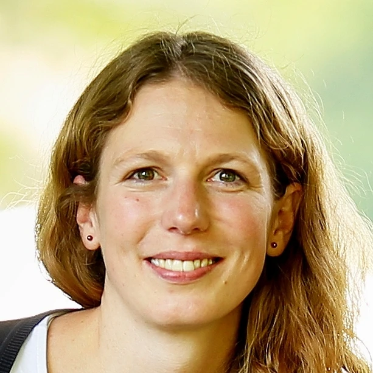

Martina Píšová
Je stavební inženýrka, ale zároveň i člověk, který hledal smysl života. Našla ho v pořádání festivalu o smrti – tématu, které není vždy populární, ale dotýká se nás všech.
Její životní postoj vystihuje motto:
„Smíření se smrtí vede k porozumění životu."
Proto se rozhodla vytvořit místo a prostor pro diskusi, sdílení příběhů a hledání inspirace, jak lépe žít – právě skrze porozumění smrti.